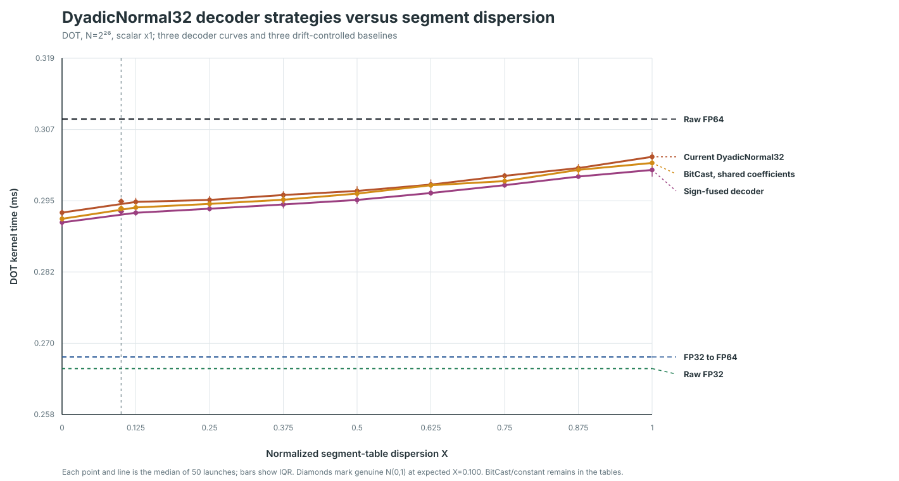

DyadicNormal32 decoder strategies
One H200 allocation, one executable, identical 32-bit code arrays, and the same scalar x1 DOT geometry. The run compares the current integer-to-FP64 decoder with sign fusion and two decoders that construct the interpolation coordinate as FP64 bits.
N=2^26, scalar x1 DOT0.292720 ms

Genuine N(0,1)
| Decoder | Median ms | Q1 ms | Q3 ms | / current | / raw FP64 |
|---|---|---|---|---|---|
| Current DyadicNormal32 | 0.294448 | 0.293672 | 0.295072 | 1.000× | 0.955× |
| Sign-fused decoder | 0.292720 | 0.292048 | 0.293320 | 0.994× | 0.949× |
| BitCast, shared coefficients | 0.293264 | 0.292496 | 0.293848 | 0.996× | 0.951× |
| BitCast, constant coefficients | 0.313712 | 0.312936 | 0.314552 | 1.065× | 1.017× |
Baselines
| Storage and arithmetic | Median ms | Q1 ms | Q3 ms | / raw FP64 |
|---|---|---|---|---|
| Raw FP64 | 0.308368 | 0.304936 | 0.312072 | 1.000× |
| Raw FP32 | 0.266144 | 0.264960 | 0.266880 | 0.863× |
| FP32 to FP64 | 0.268112 | 0.267616 | 0.269112 | 0.869× |
Dispersion sweep
| Decoder | Target X | Actual X | Median ms | Q1 ms | Q3 ms | / raw FP64 |
|---|---|---|---|---|---|---|
| Current DyadicNormal32 | 0.000 | 0.000000 | 0.292544 | 0.291712 | 0.293000 | 0.949× |
| Current DyadicNormal32 | 0.125 | 0.124977 | 0.294352 | 0.293616 | 0.295032 | 0.955× |
| Current DyadicNormal32 | 0.250 | 0.250007 | 0.294688 | 0.294088 | 0.295336 | 0.956× |
| Current DyadicNormal32 | 0.375 | 0.375024 | 0.295520 | 0.294968 | 0.296152 | 0.958× |
| Current DyadicNormal32 | 0.500 | 0.500045 | 0.296208 | 0.295648 | 0.297000 | 0.961× |
| Current DyadicNormal32 | 0.625 | 0.625035 | 0.297280 | 0.296688 | 0.298160 | 0.964× |
| Current DyadicNormal32 | 0.750 | 0.750073 | 0.298768 | 0.298144 | 0.299288 | 0.969× |
| Current DyadicNormal32 | 0.875 | 0.875034 | 0.300080 | 0.299264 | 0.300752 | 0.973× |
| Current DyadicNormal32 | 1.000 | 1.000040 | 0.301984 | 0.301392 | 0.302784 | 0.979× |
| Sign-fused decoder | 0.000 | 0.000000 | 0.290880 | 0.290112 | 0.291360 | 0.943× |
| Sign-fused decoder | 0.125 | 0.124977 | 0.292512 | 0.291976 | 0.293376 | 0.949× |
| Sign-fused decoder | 0.250 | 0.250007 | 0.293200 | 0.292712 | 0.294040 | 0.951× |
| Sign-fused decoder | 0.375 | 0.375024 | 0.293920 | 0.293240 | 0.294728 | 0.953× |
| Sign-fused decoder | 0.500 | 0.500045 | 0.294688 | 0.294016 | 0.295536 | 0.956× |
| Sign-fused decoder | 0.625 | 0.625035 | 0.295856 | 0.295392 | 0.296480 | 0.959× |
| Sign-fused decoder | 0.750 | 0.750073 | 0.297184 | 0.296736 | 0.297824 | 0.964× |
| Sign-fused decoder | 0.875 | 0.875034 | 0.298640 | 0.298312 | 0.299096 | 0.968× |
| Sign-fused decoder | 1.000 | 1.000040 | 0.299760 | 0.298616 | 0.300448 | 0.972× |
| BitCast, shared coefficients | 0.000 | 0.000000 | 0.291488 | 0.290992 | 0.291992 | 0.945× |
| BitCast, shared coefficients | 0.125 | 0.124977 | 0.293408 | 0.293056 | 0.294136 | 0.951× |
| BitCast, shared coefficients | 0.250 | 0.250007 | 0.294016 | 0.293416 | 0.294496 | 0.953× |
| BitCast, shared coefficients | 0.375 | 0.375024 | 0.294720 | 0.294032 | 0.295480 | 0.956× |
| BitCast, shared coefficients | 0.500 | 0.500045 | 0.295760 | 0.295192 | 0.296576 | 0.959× |
| BitCast, shared coefficients | 0.625 | 0.625035 | 0.297168 | 0.296448 | 0.297472 | 0.964× |
| BitCast, shared coefficients | 0.750 | 0.750073 | 0.297872 | 0.297568 | 0.298744 | 0.966× |
| BitCast, shared coefficients | 0.875 | 0.875034 | 0.299776 | 0.298848 | 0.300536 | 0.972× |
| BitCast, shared coefficients | 1.000 | 1.000040 | 0.300944 | 0.300208 | 0.301504 | 0.976× |
| BitCast, constant coefficients | 0.000 | 0.000000 | 0.296096 | 0.295488 | 0.296960 | 0.960× |
| BitCast, constant coefficients | 0.125 | 0.124977 | 0.327456 | 0.326856 | 0.328320 | 1.062× |
| BitCast, constant coefficients | 0.250 | 0.250007 | 0.496352 | 0.495016 | 0.497632 | 1.610× |
| BitCast, constant coefficients | 0.375 | 0.375024 | 0.704752 | 0.703944 | 0.705784 | 2.285× |
| BitCast, constant coefficients | 0.500 | 0.500045 | 0.872416 | 0.871496 | 0.873272 | 2.829× |
| BitCast, constant coefficients | 0.625 | 0.625035 | 1.026304 | 1.025128 | 1.028240 | 3.328× |
| BitCast, constant coefficients | 0.750 | 0.750073 | 1.188048 | 1.187528 | 1.188696 | 3.853× |
| BitCast, constant coefficients | 0.875 | 0.875034 | 1.363040 | 1.360856 | 1.364328 | 4.420× |
| BitCast, constant coefficients | 1.000 | 1.000040 | 1.539360 | 1.537216 | 1.542104 | 4.992× |
What changed
Current decodes both signs separately and converts each integer payload to FP64. Sign-fused decodes positive magnitudes and applies the XOR of the two signs once before the multiply-add. The BitCast variants replace each integer-to-FP64 payload conversion with an exact FP64 coordinate assembled from the code bits. One stages transformed coefficient pairs in shared memory; the other reads them from CUDA constant memory. All variants preserve the same 32-bit format and reconstruction points to normal FP64 rounding tolerance.
Forward batches use current, sign-fused, BitCast/shared, then BitCast/constant. Reverse batches invert that order. The baselines bracket the decoder sweep in reverse order. Each curve point and genuine-source point combines 25 samples from each direction.